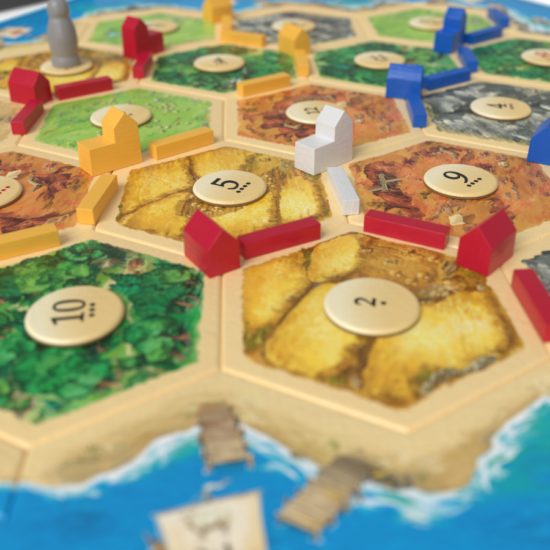

จากประสบการณ์บนโต๊ะ สู่กรอบคิดในหนังสือ
จาก Catan สู่ความน่าจะเป็นและความเสี่ยง
ดวงกำหนดผลลูกเต๋า แต่การตัดสินใจของเรากำหนดว่า จะรับมือกับดวงอย่างไร
อ้างอิงหลัก: หนังสือรายวิชา บทที่ 4 หน้า 33–40

คำถามเปิดบทเรียน
บ้านที่ผลิตบ่อยกว่า เป็นเพราะโชคดีกว่าจริงหรือ?
สิ่งที่ควบคุมไม่ได้
ผลลูกเต๋าในตาถัดไป โจร และการตัดสินใจของผู้เล่นอื่น
สิ่งที่ออกแบบได้
ตำแหน่งบ้าน ความหลากหลายของเลขและทรัพยากร รวมถึงแผนสำรอง
เมื่อจบบทเรียนนี้
เราจะตอบคำถามได้ 4 เรื่อง
แยกความสุ่มที่คำนวณโอกาสได้ ออกจากความไม่แน่นอนแบบอื่น
คำนวณผลผลิตเฉลี่ยของตำแหน่งตั้งบ้านจากเลขบนกระดาน
อธิบายว่าทำไม EV สูงอย่างเดียวอาจยังทำให้แผนติดขัด
มองเห็นการเกลียดการสูญเสียและความเชื่อผิดหลังลูกเต๋าไม่เป็นใจ
เชื่อมจาก Week 3
Love Letter กับ Catan “ไม่แน่นอน” คนละแบบ
รู้ผลลัพธ์ที่เป็นไปได้ และพอคำนวณโอกาสได้ เช่น ผลรวมของลูกเต๋า 2 ลูก
ยังไม่รู้แม้แต่รูปแบบความน่าจะเป็นที่เหมาะสม จึงคำนวณตรง ๆ ได้ยาก
เกิดจากเจตนา คำพูด และกลยุทธ์ของคนอื่น เช่น การอ่านไพ่ใน Love Letter
Catan มีทั้งความเสี่ยงจากลูกเต๋า และความไม่แน่นอนทางสังคมจากการแลกเปลี่ยน
สร้างแบบจำลองจากของจริง
ลูกเต๋า 2 ลูกมี 36 ผลลัพธ์ แต่ผลรวมไม่ได้มีโอกาสเท่ากัน
ระบบจะเน้นคู่ลูกเต๋าที่รวมกันได้เลขนั้น
การแจกแจงของ 2d6
เลขใกล้ 7 ออกบ่อยกว่าเลขที่อยู่ปลาย
อ่านข้อมูลบนชิ้นส่วน
จุดใต้ตัวเลขคือ “ทางลัด” ของความน่าจะเป็น
5 วิธีจาก 36
4 วิธีจาก 36
2 วิธีจาก 36
จุดมาก ไม่ได้แปลว่าจะออกแน่ แต่แปลว่าเมื่อเล่นนานพอ เลขนั้นมีแนวโน้มผลิตบ่อยกว่า

จากความน่าจะเป็นสู่การตัดสินใจ
ค่าคาดหวังคือผลตอบแทนเฉลี่ยระยะยาว
ถ้าผลลัพธ์แต่ละแบบให้ผลตอบแทนไม่เท่ากัน เรานำ “โอกาสเกิด” มาถ่วงน้ำหนักผลตอบแทนของแต่ละแบบ
ตัวอย่างจากหนังสือ
บ้าน A ติดเลข 6, 8 และ 4 จะผลิตเฉลี่ยเท่าไร?
คิดทีละพื้นที่
ไม้เลข 6 = 5/36
อิฐเลข 8 = 5/36
ข้าวเลข 4 = 3/36
รวมผลผลิต
เฉลี่ยประมาณ 0.361 ใบต่อตา หากไม่มีโจรปิดพื้นที่
หนังสือบทที่ 4 ตัวอย่างการคำนวณค่าคาดหวังใน Catan หน้า 38–39
เปรียบเทียบทางเลือก
บ้าน A กับบ้าน B ต่างกันมากแค่ไหน?
บ้าน A: 6, 8, 4
บ้าน B: 3, 11, 5
ค่าเฉลี่ยไม่ใช่คำสัญญา
ระยะสั้นยังผันผวนได้มาก
Var(S) = 35/6 ≈ 5.83
SD(S) ≈ 2.42
- ค่าคาดหวัง บอกจุดศูนย์กลางของผลลัพธ์ระยะยาว
- ความแปรปรวน บอกว่าผลลัพธ์กระจายห่างจากค่าเฉลี่ยเพียงใด
- การตัดสินใจที่ดีต้องมองทั้งผลตอบแทนและความผันผวน
EV สูงอย่างเดียวอาจยังไม่พอ
ทรัพยากรเยอะ แต่สร้างไม่ได้ ก็ยังติดล็อก
ทุ่มไม้: 6–8–5
ผลิตไม้บ่อยมาก แต่ยังขาดอิฐ แกะ และข้าวสำหรับสร้างหมู่บ้าน
กระจาย: 6–8–9
ผลผลิตรวมใกล้เคียง แต่มีทางต่อยอดแผนได้หลายกว่า
ทำไมความหลากหลายจึงมีค่า
การกระจายทรัพยากรลดการพึ่งพาจุดเดียว
เลขออก
พื้นที่ของเราผลิตทรัพยากร
ของในมือ
มีของหลายชนิดหรือกองอยู่ชนิดเดียว
ทางเลือก
สร้างเอง แลกกับผู้เล่น หรือแลกธนาคาร
ความยืดหยุ่น
เดินแผนต่อได้แม้บางเลขไม่ออก
Expected Utility
คนสองคนอาจเห็น EV เท่ากัน แต่เลือกไม่เหมือนกัน
- ระมัดระวังความเสี่ยง ยอมลดผลตอบแทนเฉลี่ยเล็กน้อยเพื่อความสม่ำเสมอ
- เป็นกลางต่อความเสี่ยง ให้น้ำหนักกับค่าเฉลี่ยเป็นหลัก
- ชอบความเสี่ยง ยอมรับความผันผวนเพื่อโอกาสได้ผลตอบแทนก้อนใหญ่
Prospect Theory
เสียของ 3 ใบ เจ็บกว่าตอนได้มา 3 ใบ?
เมื่อโจรทำให้ของที่คิดว่า “เป็นของเราแล้ว” หายไป จุดอ้างอิงทางใจก็เปลี่ยน
คุณเพิ่งเสียแร่ 3 ใบและตามผู้นำอยู่ จะทำอะไรในตาถัดไป?
กับดักทางความคิด
“เลข 8 ไม่ออกมานาน ตาหน้าต้องออกแน่”
ถ้าลูกเต๋ายุติธรรม การทอยแต่ละครั้งเป็นอิสระจากครั้งก่อน
หลังจากเลข 8 ไม่ออกติดต่อกัน 10 ตา โอกาสออก 8 ในตาถัดไปเป็นเท่าไร?
ถ่ายโอนสู่โลกจริง
Catan กำลังจำลองการออกแบบระบบที่รับมือความเสี่ยง
อย่ามองเฉพาะผลตอบแทนเฉลี่ย ต้องดูความผันผวนและการกระจายพอร์ตด้วย
ผู้ขายรายเดียวอาจถูกกว่า แต่ระบบจะเปราะถ้าแหล่งนั้นหยุดส่งของ
แผนที่ให้ผลดีที่สุดเมื่อทุกอย่างเป็นใจ อาจไม่ใช่แผนที่อยู่รอดได้ดีที่สุด
Debrief จากเกมที่เพิ่งเล่น
เลือกหนึ่งการตัดสินใจ แล้ววิเคราะห์เป็น 4 ชั้น
Exit Ticket
EV สูงสุดใช่คำตอบที่ดีที่สุดเสมอไหม?
“ไม่เสมอ เพราะเกมมีดวง”
ระบุ EV ความผันผวน ความหลากหลายของทรัพยากร และข้อจำกัดของแผนอย่างน้อยหนึ่งเรื่อง
เชื่อมกับ Risk Decision Note ใน Course Map ของ Week 4
สรุปบทเรียน
ดวงเป็นข้อมูลหนึ่งส่วน กลยุทธ์คือการจัดระบบรอบดวง
2d6 ไม่ได้ทำให้ผลรวมทุกเลขมีโอกาสเท่ากัน
ใช้เปรียบเทียบผลตอบแทนเฉลี่ย ไม่ใช่ทำนายตาถัดไป
ลดโอกาสติดล็อกและเพิ่มความยืดหยุ่นของแผน
การเกลียดการสูญเสียและความเชื่อผิดอาจพาออกนอกแผน
แหล่งอ้างอิง: หนังสือรายวิชา บทที่ 4 · CATAN official game & playing tips · Kahneman & Tversky (1979), DOI 10.2307/1914185 · NIST Probability Distributions